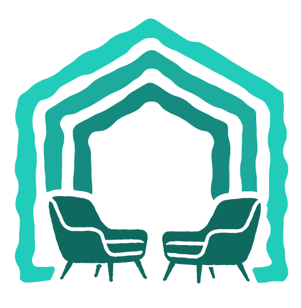

Despre mine
Sunt Mălina, psiholog clinician, consilier psihologic și psihoterapeut în formare experiențială în cadrul Institutului SPER (Societatea de Psihoterapie Experiențială Română).
Parcursul meu profesional a început din dorința de a sprijini dezvoltarea abilităților cognitive, comportamentale și sociale ale copiilor cu tulburări de neurodezvoltare. În timp, experiența mea s-a extins și către alte nevoi și provocări pe care oameni de diferite vârste le întâmpină.
În prezent, lucrez cu adulți care traversează perioade dificile sau care încearcă să înțeleagă și să schimbe tiparele repetitive care îi țin departe de viața pe care și-o doresc. De asemenea, însoțesc copii și adolescenți în procesul lor de dezvoltare și ofer sprijin familiilor acestora.
Dincolo de acreditările profesionale, sunt o persoană curioasă, creativă și empatică.
Cred că procesul terapeutic înseamnă mai mult decât tehnică. Este, înainte de toate, despre relația terapeutică, despre acel spațiu sigur în care îți poți explora trăirile fără teama de a fi judecat și în care poți descoperi, în ritmul tău, noi moduri de a te raporta la tine și la ceilalți.
Povestea din spatele siglei
Simbolul casei are pentru mine o semnificație aparte, fiind asociat cu momentul în care am ales drumul psihologiei.
În liceu, la o oră de psihologie, am auzit pentru prima dată „povestea căsuței”, o metaforă plină de speranță care a rămas cu mine și care continuă să mă inspire în munca mea.
Ea spune că fiecare dintre noi are o fundație, construită în primii ani de viață. Pe această fundație se ridică întreaga casă: apar camere mai luminoase sau mai întunecate, pereți puternici sau mai fragili, ferestre prin care privim lumea și uși pe care, uneori, ne este teamă să le deschidem sau să le închidem.
Deși fundația e stabilă și dificil de schimbat, restul casei poate fi reconstruit atunci când avem curajul să devenim arhitecții propriei vieți. Cărămidă cu cărămidă, autocritica poate fi înlocuită de o voce mai blândă. Dificultatea de a pune limite sănătoase poate fi transformată în capacitatea de a spune „nu” fără vinovăție.
Relațiile care ne rănesc pot fi încheiate, iar în locul lor putem construi relații pe încredere și siguranță.
Schimbarea nu se întâmplă brusc și nici prin încercarea de a dărâma toată casa dintr-odată. Se întâmplă în schimb cu răbdare, compasiune și uneori alături de o persoană care să ne ghideze. În munca mea de psiholog, unul dintre obiective este acela de a le fi alături oamenilor în procesul de a construi propriul „acasă” interior.

Studii academice
- 2023-2026 - Formare în psihoterapie experiențială pentru adult, copil, cuplu și familie, Institutul SPER
- 2018-2020 - Master Psihologie clinică: Evaluare și Intervenție terapeutică, Universitatea din București
- 2015-2018 - Facultatea de Psihologie și Științele Educației, Universitatea din București, Departamentul de Psihologie
Cursuri de specializare
- 2026 - Adaptarea evitantă în psihoterapia Gestalt, formatori Cristina Comănac și Ioana Tofan
- 2025 - Adolescentul cu autism și teoria minții, ABA Masters
- 2024 - Neurobiologia traumei, Asociația Origini
- 2023 - Anxietatea la copil: conceptualizarea cazului și programe de intervenție clinică, formator Geanina Cucu Ciuhan
- 2023 - Evaluarea experiențială a relației părinte-copil, formator Andreea Neagu
- 2023 - Intervenții prin joc non-directiv în terapia copilului și a familiei, formator Andreea Neagu
- 2022 - Intervenții prin joc directiv în terapia copilului și a familiei, formator Andreea Neagu
- 2021 - Tehnici ABA în tulburările din spectrul autist, ABA Masters
- 2021 - Limbaj funcțional și tehnici de logopedie în tulburările de dezvoltare, ABA Masters
- 2021 - Logopedia: de la întârzierea în dezvoltarea limbajului la tulburările de pronunție, Asociația CCDU Phoenix